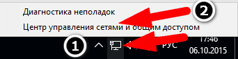
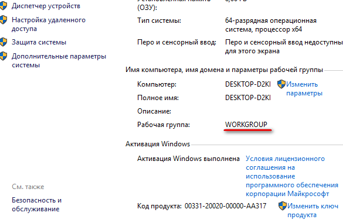
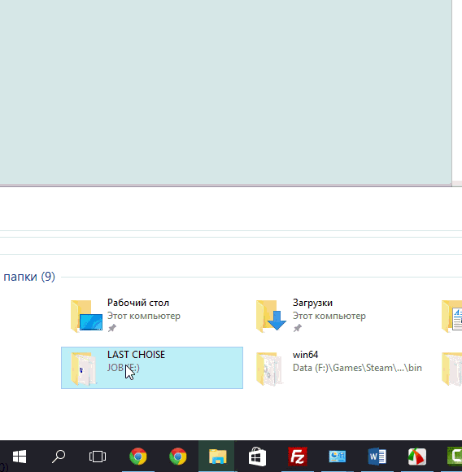
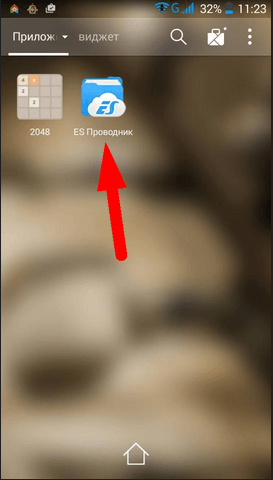
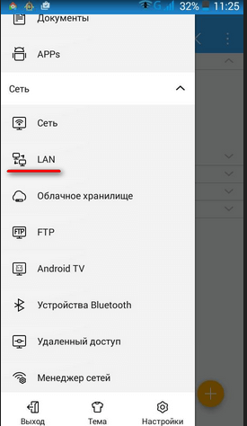
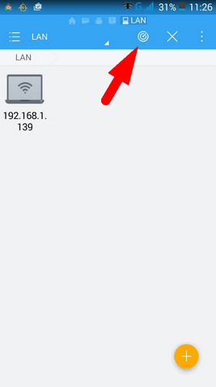
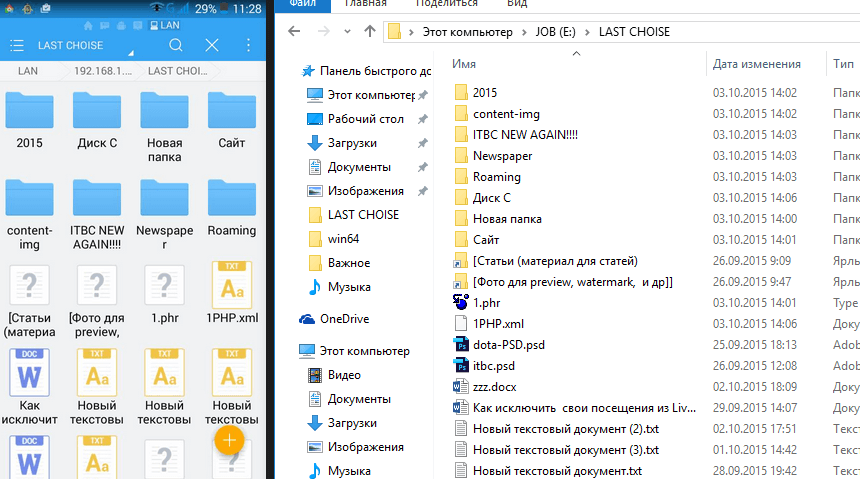
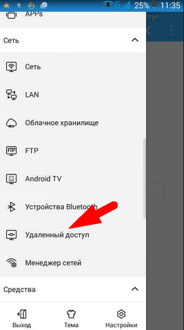
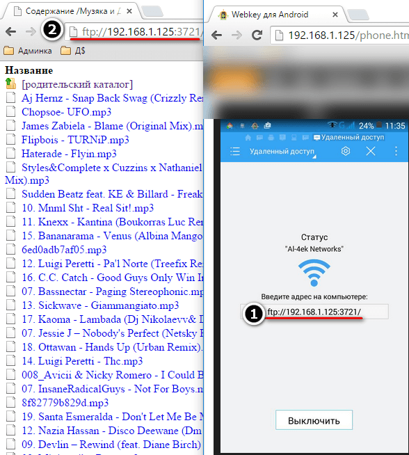
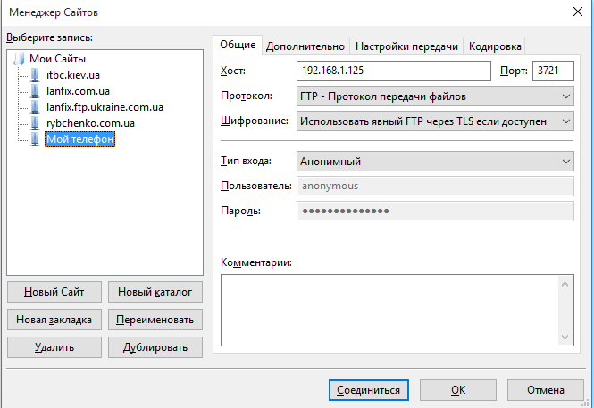

Удалённый просмотр и редактирование файлов Android через FTP
13.10.2015 /
Как настроить локальную сеть и обмениваться файлами через wi-fi между телефоном, планшетом, компьютером. Также подходит, для настройки двух компьютеров для игры по локальной сети. С помощью этого способа вы забудете про USB
Первым делом нажмите правой клавишей по вашему сетевому подключению и выберите вариант Центр управления сетями и общим доступом

Теперь перейдите в Изменить дополнительные параметры общего доступа. Выставьте параметры, как в этом видео на 1:10
Также вам надо настроить общую Рабочую группу. Обычно она называется WORKGROUP, поэтому если у вас также, можете пропустить этот шаг. Посмотреть, как у вас называется рабочая группа можно нажав правой клавишей мыши по Этот компьютер (Мой компьютер) – Свойства

Если надо изменить название рабочей группы выберите Изменить параметры рядом с именем компьютера
Супер! После этого вам желательно присвоить всем членам локальной группы статические ip адреса. Как это сделать я говорил в этой статье
Как открыть доступ к общей папке локальной сети
Как открыть доступ к общей папке локальной сети
Как зайти в паку которая в общем доступе с Android
Как открыть общий доступ на Android, чтобы мы могли сбрасывать фотки по Wi-fi
Как открыть доступ к общей папке. К примеру, вы хотите открыть общий доступ к папке на вашем компьютере. Таким образом можно складировать все фильмы на одном компьютьере, а смотреть с разных устройств. К примеру, вы захотели посмотреть фильм на ноутбуке вечерком (smarttv)
Вы качаете фильм на свой компьютер, а потом смотрите по сети через ноутбук. Удобно. Также само это настраивается на файл-сервере (домашнем сервере)
После того, как вы открыли доступ к вашему компьютеру (как в видео выше) откройте доступ к какой-то папке.
Нажмите правой клавишей мыши по папке, к которой вы хотите открыть общий доступ и выберите – Свойства – Доступ – Общий доступ… — выбрать из списка Все, выбрать Чтение и запись и выбрать Поделиться

Таким образом вы открыли доступ к папке на рабочем компьютере. Теперь, чтобы попасть в эту папку на другом компьютере, нажмите Win+R и введите \192.168.1.139(или в вашем случае ваш ip)
Как зайти в паку которая в общем доступе с Android
Чтобы попасть в такую папку у вас должен быть установлен ES-проводник (или аналогичная программа, но эта, самая лучшая)
Установить Es-проводник на Android
После этого, вы должны быть подключены к одной сети Wi-fi. Теперь откройте es-проводник

Переходим на планшете или телефоне во вкладку Lan

По идее, у вас уже должен отобразиться компьютер, где включён общий доступ. Если его нет, нажмите на кнопочку поиска компьютера с доступом

Давайте выберем 192.168.1.139 (мой компьютер, где доступ к файлам я давал выше)

Как открыть общий доступ на Android, чтобы мы могли сбрасывать фотки по Wi-fi
Откройте в Es manager главное меню и выберите Удалённый доступ. После этого, откроется доступ по Ftp. Если вы введёте в строке браузера то, что вас попросят, вы получите ftp доступ. Файлы можно перетягивать прямо на компьютер. Как и папки

Супер! Теперь может перекидывать всё к себе на компьютер

Таким образом можно получить доступ с телефона к телефону или с телефона к планшету и наоборот (ну вы поняли)
Вот и всё. Теперь вы знаете как создать локальный доступ к вашим файлам или как сделать локальную сеть
Кстати, если вы пользуетесь Filezilla, как ftp программой, настройки подключения к вашему телефону выглядят таким образом

С помощью filezilla можно скидывать целые папки за считанные минуты. Также с Filezilla можно закинуть по Wi-fi любую информацию с ПК на Ваш телефон и скорость порою даже быстрее чем через usb ;)
Вот такие пироги)
Категория: Android, Wi-fi и локальная сеть Теги: wi-fi, планшет, телефон